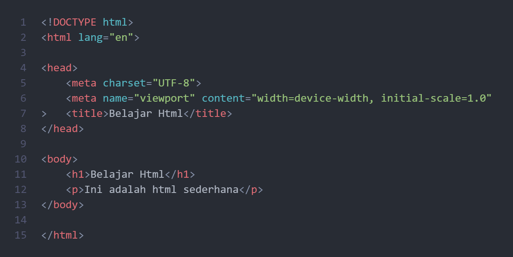

Materi Pemrograman Web
HTML
HTML(Hyper Text Markup Language) berfungsi untuk menentukan struktur halaman web (judul, paragraf, gambar, link, tabel, form, dll.). HTML adalah pondasi utama dari setiap website. Tidak bisa berfungsi sendiri, perlu CSS & JavaScript untuk tampilan dan interaksi.
Contoh HTML:
CSS
CSS(Cascading Style Sheets) berfungsi untuk memberikan gaya dan desain pada halaman HTML seperti mengatur warna, ukuran font, tata letak, animasi, dll. Bisa ditulis langsung dalam file HTML ataupun file terpisah (style.css).
Contoh CSS:
JavaScript
JavaScript berfungsi untuk membuat website interaktif (tombol klik, validasi form, animasi, dll.). JavaScript bisa berinteraksi dengan HTML & CSS dan dijalankan langsung di browser tanpa memerlukan server.
Contoh program JavaScript:
Pengenalan PHP
PHP adalah bahasa pemrograman server-side untuk mengolah data. Bisa digunakan untuk membuat form login, database, sistem dinamis. Berbeda dengan JavaScript, PHP berjalan di server, bukan di browser.
Contoh program PHP:
Mengontrol Alur Program
Pengonrolan alur dibutuhkan untuk menjalankan kode secara dinamis berdasarkan kondisi tertentu.
Contoh pengontrolan alur:
Perulangan dan Array
Perulangan yaitu proses pengulangan kode secara terus-menerus sampai kondisi terpenuhi. Array digunakan untuk menyimpan banyak data. Perulangan dan array dibutuhkan untuk memproses data secara dinamis.
Contoh penggunaan pengulangan dan array: